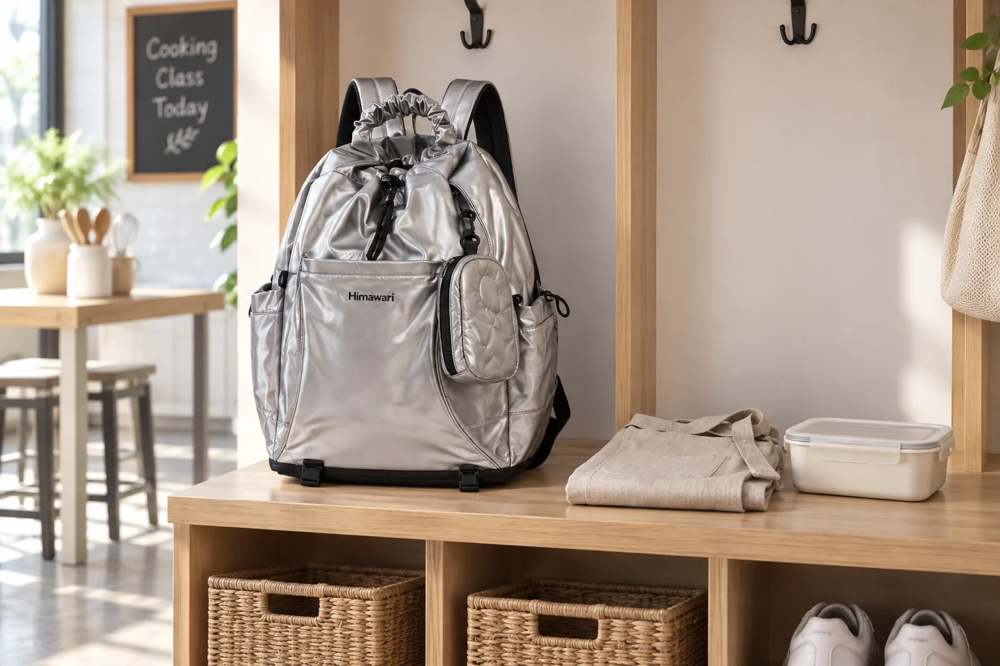
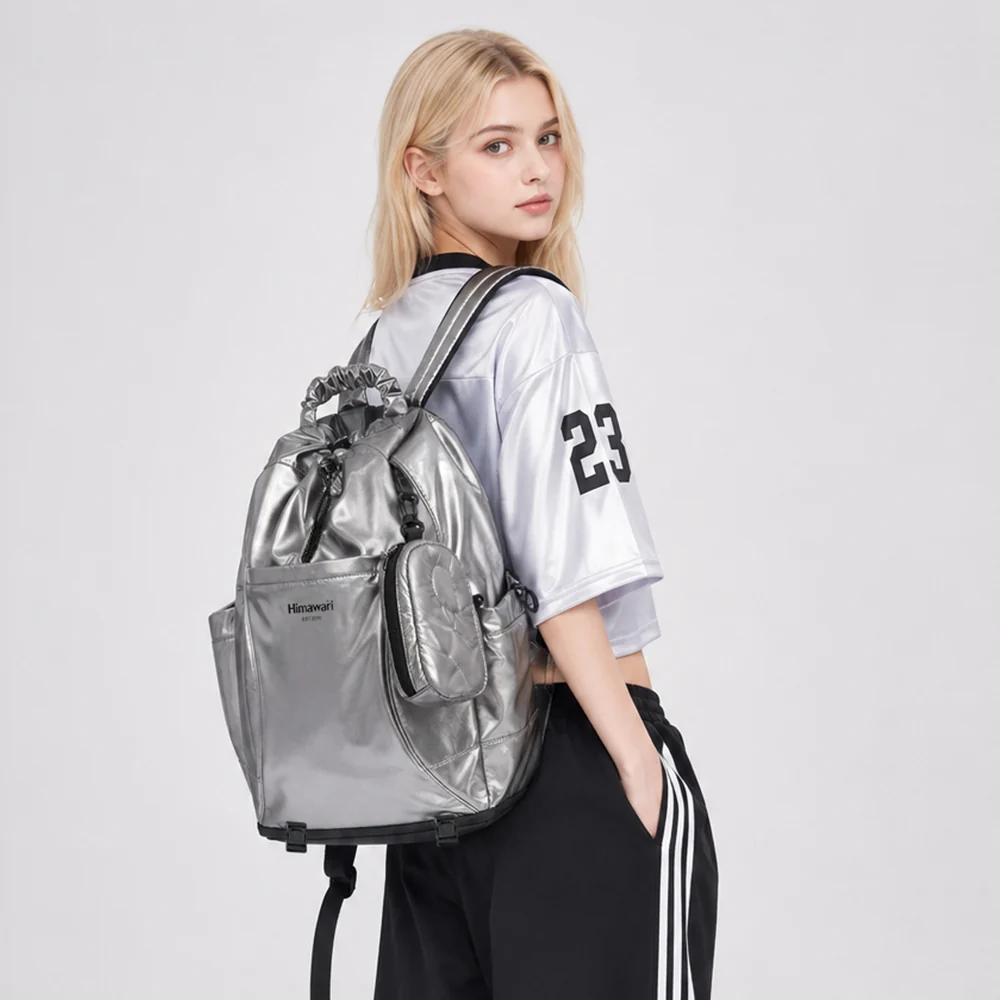

요리 수업을 마친 뒤 달라지는 가방

요리 수업에 가는 백팩은 시작할 때와 마칠 때의 짐이 다를 수 있습니다. 접어둔 앞치마가 사용한 앞치마가 되고, 빈 용기를 가져갔다면 돌아올 때 다른 방식으로 다뤄야 할 수 있습니다. 어떤 수업은 만든 음식을 현장에서 먹고 끝나고 다른 수업은 반출 안내가 따로 있습니다. 가방의 여유부터 계산하기보다 예약 안내에서 무엇을 제공하고 무엇을 직접 가져가야 하는지 확인하면 준비할 물건의 범위가 먼저 정해집니다.
앞치마나 필기구를 챙기기 전에 제공 물품과 개인 준비물을 두 줄로 나누어 적어볼 수 있습니다. 수업에서 빌리는 도구까지 모두 가져오면 집에서 챙기는 짐과 현장에서 관리할 짐이 늘어납니다. 개인 도구의 반입이 필요한지도 안내에 따라 확인하세요. 특히 재료나 조리 도구는 필요하리라 짐작해 추가하기보다 운영자에게 확인한 물건만 준비하면 수업에서 실제로 사용할 묶음이 분명해집니다.
조리 공간에 들어갈 물건
필기할 종이나 앞치마처럼 수업 중 사용할 물건을 한 묶음으로 두고 지갑, 휴대전화, 집 열쇠와 위치를 나눕니다. 도착하자마자 백팩의 모든 내용물을 조리대에 꺼낼 필요 없이 사용할 것만 먼저 꺼낼 수 있게 하는 준비입니다. 수업 안내가 휴대전화에 있다면 접수에서 확인한 뒤에는 개인 소지품과 함께 정리할 수 있습니다. 수업 중 휴대전화를 쓸 수 있는지는 장소의 운영 안내를 따릅니다.
앞치마를 가져가야 한다면 끈을 안쪽으로 정리하고 접은 상태에서 꺼내는 방향을 봅니다. 긴 끈이 파일이나 지퍼에 걸리면 수업 입구에서 묶음을 다시 펼치게 될 수 있습니다. 그렇다고 앞치마를 단단히 압축할 필요는 없습니다. 실제 앞치마의 형태를 해치지 않고 한 번에 꺼낼 수 있는 정도로 접어두면 됩니다. 사용할 앞치마와 깨끗한 개인 옷을 함께 챙겼다면 돌아오는 자리까지 따로 생각합니다.
장소에 도착해서는 가방 보관 위치를 먼저 확인합니다. 조리대와 대기 공간의 빈 면이 보인다고 바로 개인 짐을 올려놓기보다 운영자의 안내를 따르세요. 필요한 물건을 꺼낸 뒤 백팩을 닫으면 수업 도중 개인 소지품이 작업 도구와 섞이는 일이 줄어듭니다. 이동 통로와 물기가 닿는 자리를 살피고, 장소를 바꿔 실습해야 한다면 가방을 계속 같은 곳에 둘 수 있는지도 확인할 수 있습니다.
수업이 끝나고 다른 약속이 이어진다면 개인 짐을 조리 소품과 나누어두는 구성이 필요합니다. Himawari No.0515 제품 정보의 실버 모델을 참고할 때도 이날 가져갈 앞치마와 필기 도구를 실제로 놓고 꺼낼 순서를 정해볼 수 있습니다. 필기한 노트는 다음에 다시 읽을 자료이고 사용한 앞치마는 집에서 먼저 꺼낼 물건입니다. 수업에서 서로 다른 상태가 되는 두 묶음의 돌아갈 자리를 구분해두면 됩니다.

빈 용기가 필요하다는 안내를 받았다면 용기 자체의 사용 설명을 보고 뚜껑을 열고 닫아봅니다. 수업에서 지정한 종류나 크기가 있는지 확인한 다음 그 상태로 운반할 방법을 정하면 됩니다. 용기 사진만 보고 남은 가방 공간에 맞출 수 있다고 판단하기보다, 뚜껑과 손잡이까지 포함한 외형을 확인하세요. 빈 용기를 백팩에 담더라도 사용 후 같은 자리에 들어간다고 미리 정해놓을 필요는 없습니다.
예를 들어 앞치마와 노트는 백팩에 두고 용기는 별도 운반 가방에 준비하는 구성이 가능합니다. 이 경우 수업 중 빈 운반 가방을 놓을 곳과 마친 뒤 다시 꺼낼 순서를 알아두면 됩니다. 용기를 가져가지 않는 수업이라면 그 자리를 굳이 비워두거나 다른 짐으로 채울 필요도 없습니다. 다음번 수업의 메뉴와 반출 방식이 달라지면 이번 목록을 그대로 재사용하지 않고 안내받은 준비물만 다시 대조합니다.
마친 뒤에는 상태로 나누기
사용한 앞치마에 물기나 음식물이 남았다면 깨끗한 옷과 서류에 바로 맞대지 않도록 별도로 감쌉니다. 앞치마를 넣을 봉투나 주머니도 출발 전에 준비할 수 있습니다. 벗은 앞치마를 원래 접었던 모양으로 만드는 데 시간을 쓰기보다 다른 짐에 닿지 않게 임시 운반하는 방법을 정하세요. 집에 와서 먼저 꺼내 관리할 물건이 무엇인지도 이때 함께 구분할 수 있습니다.
만든 음식을 가져갈 수 있는 수업이라면 운반에 필요한 조건은 운영자의 안내와 용기 취급 정보에서 확인합니다. 가방은 개인 짐을 담는 자리로 생각하고 음식의 온도나 보관 시간을 해결하는 도구로 가정하지 않습니다. 용기를 놓을 방향이나 별도 운반이 필요한지에 관한 안내가 있다면 그 조건을 먼저 따르세요. 같은 용기라도 내용물에 따라 다루는 방식이 달라질 수 있으므로 이전 수업의 방법을 자동으로 옮기지 않습니다.
나오기 전에는 조리 도구와 개인 물건을 구분해서 봅니다. 현장에서 빌린 물건은 반환 위치를 확인하고, 자신의 필기구와 안내 종이는 백팩으로 돌려놓습니다. 수업 중 옷이나 소지품을 별도로 두었다면 가방 하나만 메고 나서지 않도록 그 자리까지 살펴보세요. 완성품을 손에 들고 있으면 원래 가져온 짐을 떠올리기 어려울 수 있으므로, 백팩과 별도 운반물의 개수를 간단히 확인하면 됩니다.
집에 돌아오면 사용한 앞치마와 운반 용기를 먼저 꺼내 각 물건의 관리 안내에 따라 정리합니다. 필기한 노트에는 수업 중 급히 적은 말이 남아 있을 수 있으니 나중에 읽을 수 있는지만 살펴보세요. 설명이 생략된 메모는 강사가 알려준 내용을 확인할 수 있는 범위에서 정리하고, 기억나지 않는 부분은 임의로 보태지 않습니다. 다음 수업에 가져갈 노트와 집에서 관리할 앞치마를 서로 다른 자리에 두면 이날 배운 기록과 사용한 물건의 정리가 각각 이어집니다.